Raiden
Ex niño soldado conocido como Jack el Destripador. Intenta dejar atrás su pasado, pero termina aceptando su naturaleza violenta para detener a Desperado.
Zona Gamer es una página creada para fans de los videojuegos clásicos y modernos. Aquí encontrarás información completa de cada juego, incluyendo historia, personajes, plataformas, duración, soundtrack y mucho más.
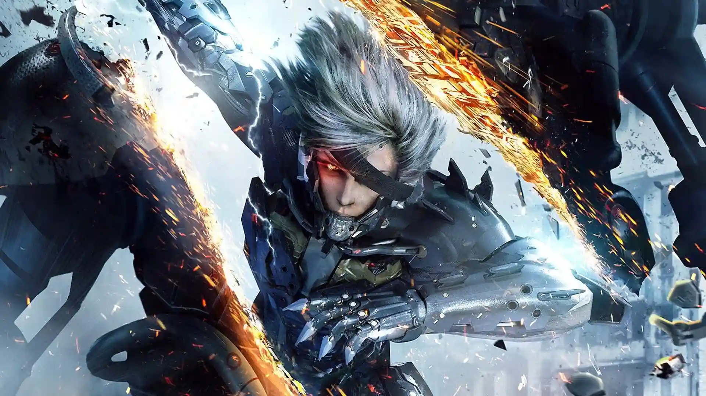
Raiden es un cyborg ninja que trabaja como mercenario en un mundo dominado por guerras privadas y tecnología militar avanzada. Mientras combate organizaciones corruptas y enemigos extremadamente peligrosos, deberá enfrentarse a su pasado y aceptar la violencia que lleva dentro.
El juego destaca por su sistema de combate rápido y brutal, sus jefes épicos y una de las bandas sonoras más icónicas de los videojuegos.
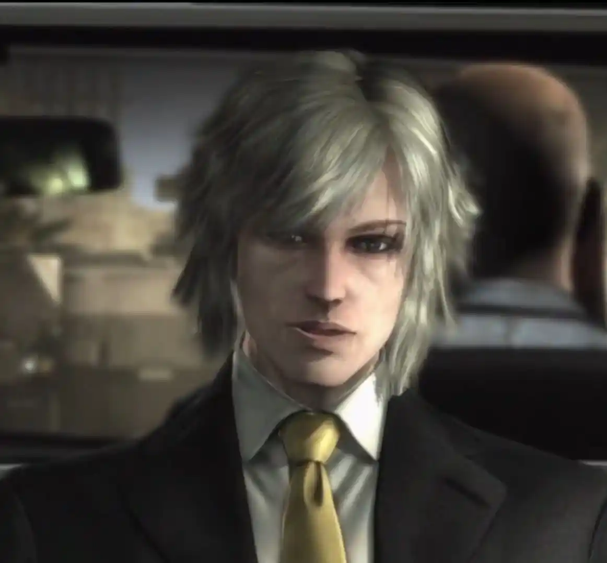
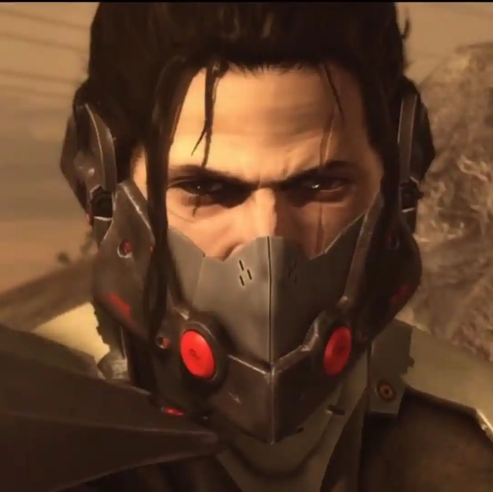
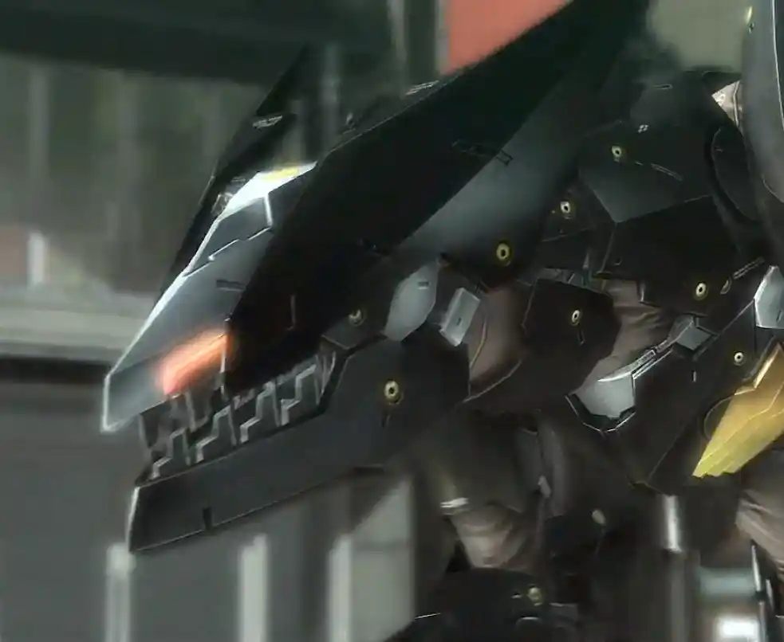
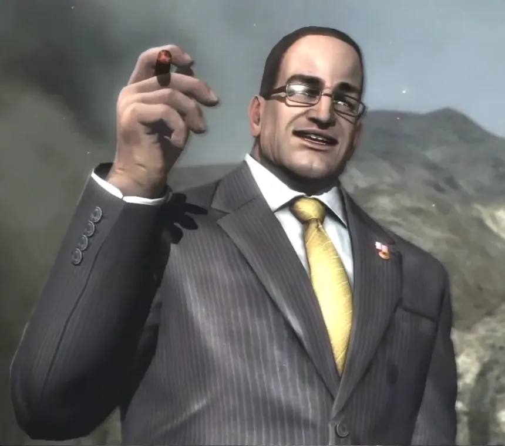
La historia ocurre años después de los eventos de Metal Gear Solid 4. El mundo cambió completamente: las guerras ya no son controladas por gobiernos, sino por compañías militares privadas conocidas como PMC.
Raiden trabaja protegiendo al primer ministro africano N'mani, pero durante la misión aparece una organización terrorista liderada por el misterioso Samuel Rodrigues, conocido como Jetstream Sam.
Raiden es derrotado brutalmente. Pierde un ojo, su brazo izquierdo y casi muere. Luego es reconstruido con un cuerpo cyborg mucho más avanzado.
Desde ese momento inicia una misión para descubrir quién controla realmente las guerras. Lo que parecía una simple venganza termina revelando experimentos con niños soldados, manipulación política y un plan para crear una nueva economía basada en conflicto permanente.
Durante el viaje, Raiden debe aceptar su pasado como “Jack el Destripador”, la personalidad violenta que intentó reprimir durante años.
El juego mezcla acción exagerada, filosofía política, crítica al capitalismo militar y momentos completamente absurdos que terminaron convirtiéndose en memes legendarios.
Metal Gear Rising tiene uno de los sistemas de combate más rápidos y violentos de la generación PS3/Xbox 360.
El jugador controla a Raiden usando una katana de alta frecuencia capaz de cortar prácticamente cualquier objeto del escenario.
La mecánica principal es Blade Mode, un sistema que permite ralentizar el tiempo y cortar enemigos manualmente en cualquier dirección.
El combate recompensa reflejos rápidos, parries precisos y agresividad constante. Cada jefe introduce nuevas mecánicas y exige dominar el sistema.
Ex niño soldado conocido como Jack el Destripador. Intenta dejar atrás su pasado, pero termina aceptando su naturaleza violenta para detener a Desperado.
Espadachín brasileño extremadamente habilidoso. Rival y espejo de Raiden. Su filosofía y estilo lo convierten en uno de los personajes más queridos.
Inteligencia artificial militar con apariencia de lobo. Cuestiona constantemente qué significa tener libre voluntad.
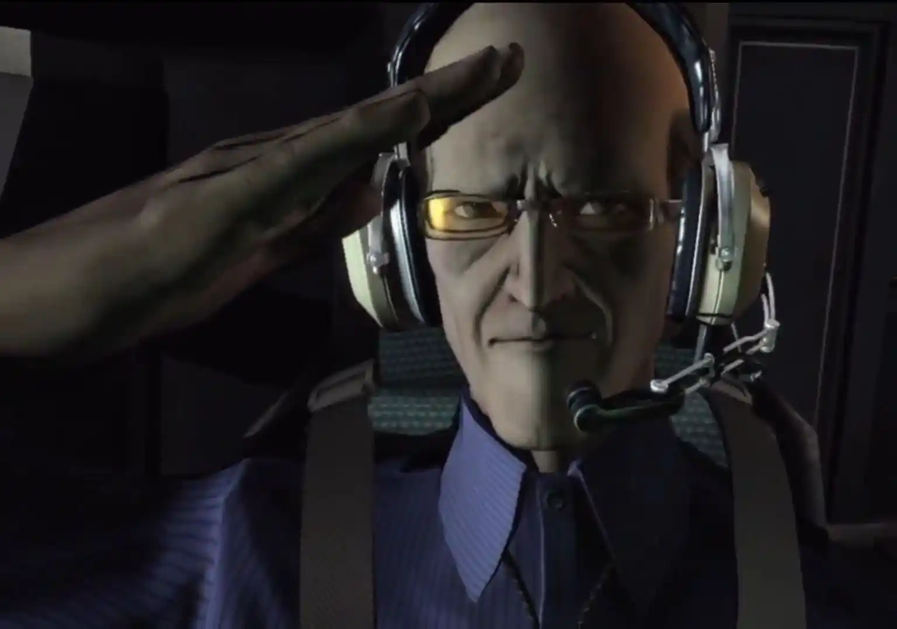
Científico encargado del soporte técnico de Raiden. Aporta humor y explicaciones sobre tecnología cyborg.
El primer jefe del juego. Una batalla gigantesca que sirve como introducción al nivel de destrucción que tendrá toda la aventura.
Cyborg francesa especialista en armas múltiples y control de pequeños robots.
Uno de los personajes más filosóficos del juego. Puede separar su cuerpo magnéticamente y habla sobre memes e ideologías.
Un monstruo obsesionado con la guerra. Representa la corrupción total de la industria militar.
El antagonista final. Un político absurdamente poderoso físicamente gracias a nanotecnología. Su pelea final es una de las más épicas de los videojuegos.
La OST de Metal Gear Rising es una de las más icónicas de la historia gaming. Cada jefe tiene una canción propia con letras que representan su personalidad.
La música cambia dinámicamente durante las peleas, aumentando la intensidad cuando el combate llega a su punto máximo.
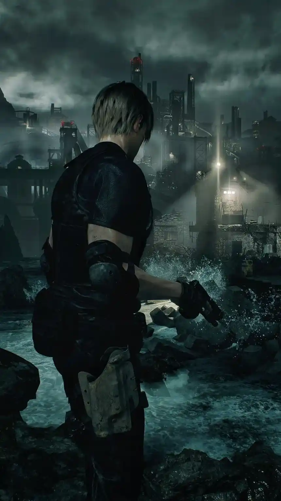
Leon S. Kennedy es enviado a una aldea aislada de Europa para rescatar a Ashley Graham, la hija del presidente de Estados Unidos. Lo que parecía una misión simple rápidamente se convierte en una pesadilla cuando descubre que los habitantes fueron infectados por Las Plagas.
Resident Evil 4 Remake reconstruye completamente el clásico de 2005 con gráficos modernos, nuevas mecánicas, mejor exploración y una atmósfera mucho más oscura y terrorífica.
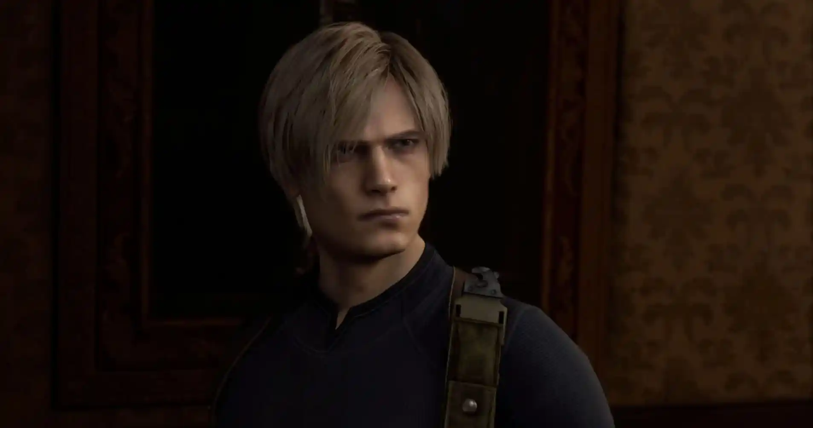

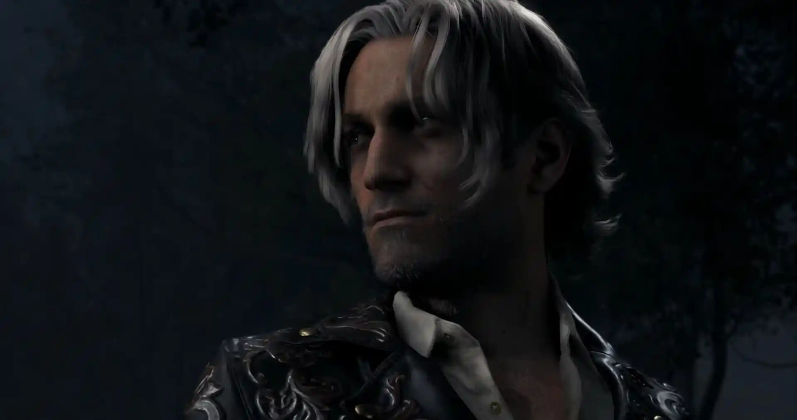
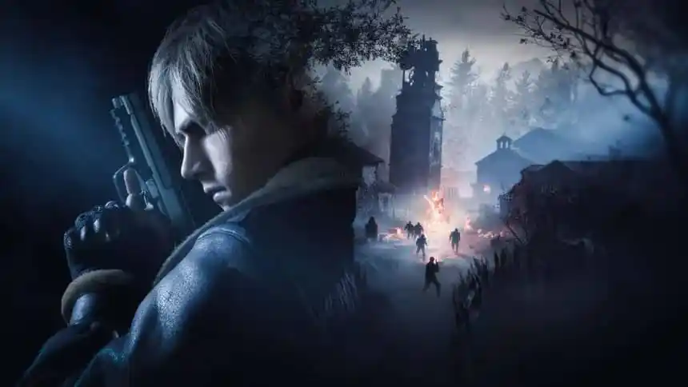
Seis años después de la destrucción de Raccoon City, Leon S. Kennedy trabaja como agente especial del gobierno de Estados Unidos. Su nueva misión es rescatar a Ashley Graham, la hija del presidente, quien fue secuestrada y llevada a una remota aldea europea.
Al llegar, Leon descubre que los habitantes están infectados por un extraño parásito llamado Las Plagas, capaz de controlar completamente a las personas y transformarlas en criaturas extremadamente violentas.
A medida que avanza por aldeas destruidas, castillos gigantes y laboratorios secretos, deberá enfrentarse a cultos religiosos, monstruos mutados y enemigos icónicos como El Gigante, los Garradores, Verdugo y Ramón Salazar.
El remake reconstruye completamente el clásico original con gráficos modernos, una atmósfera mucho más oscura y un combate más intenso y realista. La tensión nunca desaparece y cada zona presenta nuevos desafíos.
La administración de recursos vuelve a ser clave. Las balas son limitadas, los enemigos son agresivos y muchas veces sobrevivir depende de tomar decisiones rápidas bajo presión.
Resident Evil 4 Remake logra combinar perfectamente terror, acción y exploración, manteniendo la esencia del juego original mientras moderniza todas sus mecánicas.
El juego mezcla disparos en tercera persona, gestión de recursos, exploración y momentos de tensión constante. El comerciante regresa como una figura clave para mejorar armas, vender objetos y preparar al jugador para zonas más difíciles.
La cámara sobre el hombro, los parries, la movilidad de Leon y la inteligencia de los enemigos hacen que cada combate sea intenso. No se siente como una simple actualización gráfica, sino como una revisión completa de cómo debe jugarse Resident Evil 4 hoy.
Agente especial del gobierno de Estados Unidos y protagonista del juego.
La hija del presidente, secuestrada y llevada a la aldea infectada.
Misteriosa agente con objetivos ocultos que reaparece en la historia.
Ex investigador con conocimiento sobre Las Plagas y gran peso en la aventura.
Líder del culto y principal responsable del brote de Las Plagas.
El noble deformado que custodia el castillo y se convierte en una de las amenazas más recordadas.
Rival de Leon y uno de los combates más intensos del juego.
El parásito central de la historia, capaz de controlar cuerpos y crear enemigos impredecibles.
Resident Evil 4 Remake no solo brilla por su combate. Su sonido y música construyen una atmósfera densa, inquietante y perfecta para mantener al jugador en tensión.
El silencio en ciertos momentos y la intensidad en los enfrentamientos hacen que la experiencia sea mucho más inmersiva.

Leon S. Kennedy llega a Raccoon City en su primer día como policía, pero descubre que toda la ciudad fue devastada por un brote biológico causado por Umbrella Corporation.
Mientras intenta sobrevivir junto a Claire Redfield, deberá atravesar calles infestadas de zombies, resolver acertijos y escapar de criaturas extremadamente peligrosas.


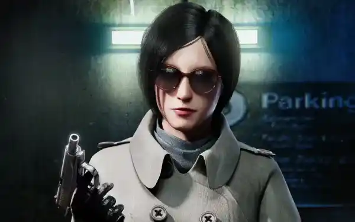

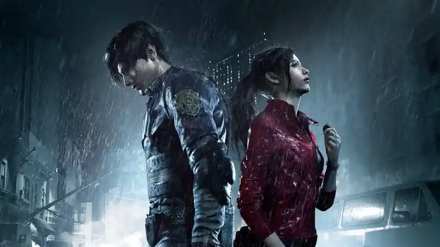
Leon S. Kennedy llega a Raccoon City en su primer día como policía, pero descubre que toda la ciudad fue devastada por un brote biológico causado por Umbrella Corporation.
Mientras intenta sobrevivir junto a Claire Redfield, deberá atravesar calles infestadas de zombies, resolver acertijos y escapar de criaturas extremadamente peligrosas.
La comisaría de Raccoon City se convierte en un enorme laberinto lleno de secretos, puertas bloqueadas y zonas conectadas entre sí, creando exploración constante.
Uno de los elementos más recordados es Mr. X, una amenaza imparable que persigue al jugador por la comisaría y eleva la tensión al máximo.
Resident Evil 2 Remake reconstruye completamente el clásico de 1998 con gráficos modernos, sonido inmersivo y una atmósfera mucho más terrorífica.
Es considerado uno de los mejores remakes de la historia por modernizar completamente el original sin perder su esencia clásica.
El juego combina exploración, disparos en tercera persona, administración de recursos y resolución de puzzles. Cada bala cuenta, cada cura importa y cada paso en la comisaría puede ser peligroso.
La cámara sobre el hombro moderniza la experiencia y hace que cada combate se sienta más tenso. Apuntar lleva tiempo, moverse es arriesgado y muchas veces conviene escapar antes que enfrentar todo de frente.
Joven oficial de policía que llega a Raccoon City justo cuando todo se descontrola.
Busca a su hermano Chris y termina luchando por sobrevivir en la ciudad infectada.
Misteriosa agente con objetivos ocultos dentro del brote.
El perseguidor más temido del juego y una de sus mayores amenazas.
Una bioarma diseñada para perseguir y eliminar objetivos específicos. Su presencia genera tensión constante.
Científico de Umbrella convertido en una criatura mutante tras inyectarse el G-Virus.
Mutaciones horribles creadas por el virus G que aparecen en las alcantarillas y laboratorios.
La compañía responsable del desastre que destruye Raccoon City y arrasa con todo a su paso.
La música de Resident Evil 2 Remake no busca sonar épica todo el tiempo, sino aumentar la tensión cuando hace falta. El silencio también juega un papel importante, porque hace que cada paso, cada ruido y cada aparición repentina se sientan más fuertes.
El diseño sonoro es una de sus mayores virtudes. Los sonidos de los zombis, los golpes de las puertas, los pasillos vacíos y la respiración de los personajes crean una atmósfera inquietante de principio a fin.
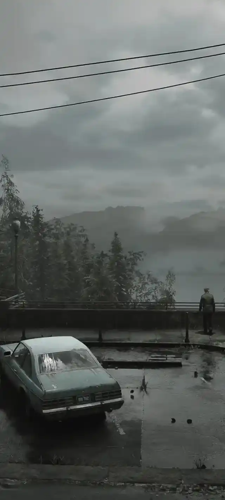
James Sunderland recibe una carta de su esposa fallecida y viaja a Silent Hill para descubrir si realmente fue enviada por ella. Lo que encuentra es un pueblo cubierto de niebla, criaturas imposibles y una historia marcada por la culpa, el duelo y la represión emocional.
El remake moderniza uno de los juegos más influyentes del terror psicológico con escenarios más detallados, iluminación más intensa y una atmósfera mucho más opresiva.
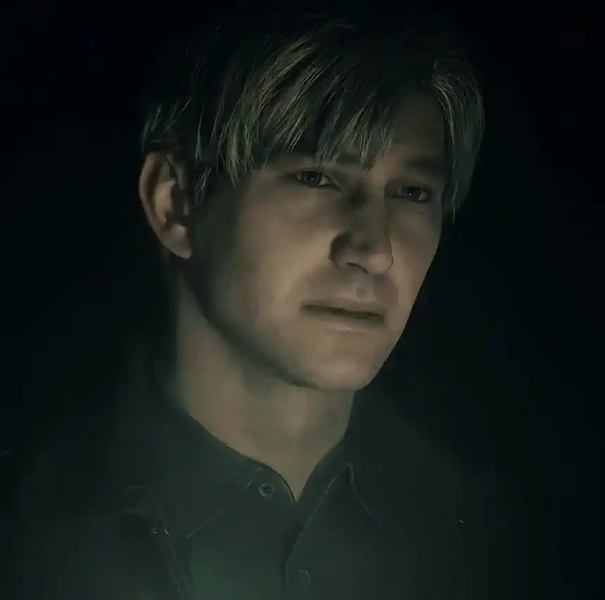
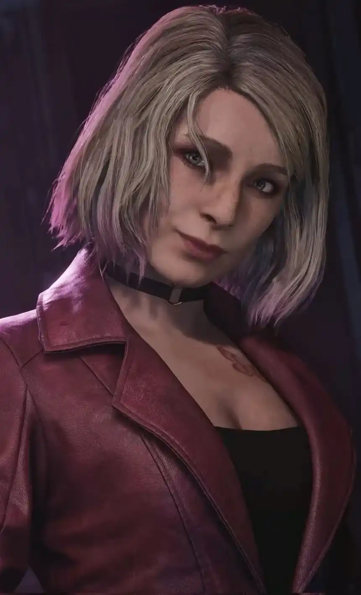
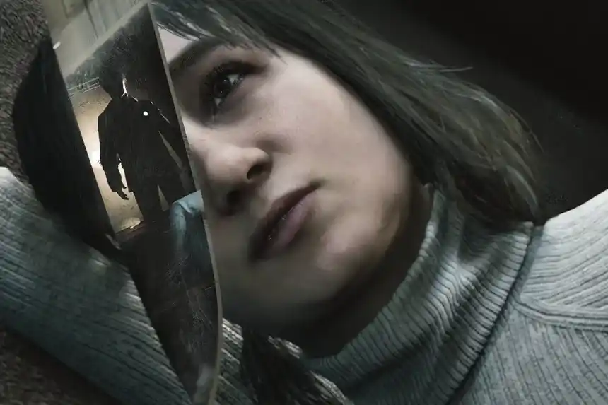
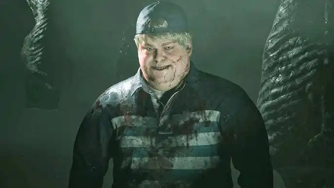
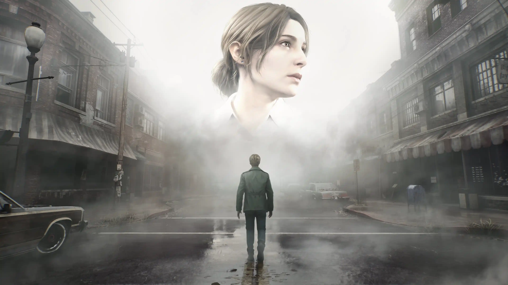
James Sunderland recibe una carta firmada por su esposa Mary, quien supuestamente falleció hace tiempo. La carta le pide que vaya a Silent Hill, un pueblo cubierto de niebla donde parecen esconderse respuestas imposibles.
Al llegar, James descubre un lugar vacío y perturbador, lleno de criaturas que parecen reflejar sus propios traumas, miedos y culpa. Cada zona del pueblo lo obliga a enfrentar la verdad de su pasado mientras la realidad se vuelve cada vez más inestable.
La historia de Silent Hill 2 Remake es profundamente emocional. No se trata solo de sobrevivir, sino de entender por qué James está allí y qué representa realmente el pueblo para él.
El remake mantiene la esencia del clásico original, pero reconstruye cada escenario con una atmósfera más densa, un diseño sonoro más agresivo y una dirección visual más moderna.
El resultado es una experiencia que mezcla terror, tristeza, culpa y simbolismo de una forma que sigue siendo única dentro del género.
Silent Hill 2 Remake apuesta por una exploración lenta y tensa, combates limitados y una sensación constante de vulnerabilidad. No busca que el jugador se sienta poderoso, sino perdido.
La niebla, la oscuridad y el sonido ambiental juegan un papel enorme. Cada espacio del pueblo se siente incómodo, y los encuentros con enemigos son más aterradores por cómo están presentados que por su cantidad.
Protagonista principal. Viaja a Silent Hill siguiendo una carta imposible.
Figura misteriosa que recuerda a Mary, pero con una personalidad distinta.
Una joven atrapada por sus propios traumas y su pasado doloroso.
Otro visitante del pueblo cuya mente también se rompe ante lo que vive.
La figura más icónica de Silent Hill 2. Representa culpa, castigo y violencia contenida.
Enemigos inquietantes que refuerzan el tono psicológico del juego con su diseño perturbador.
Una de las criaturas más recordadas del juego por su significado simbólico y su carga emocional.
Más que un escenario, el propio pueblo funciona como una entidad que juzga y expone a quienes llegan allí.
La música de Silent Hill 2 Remake mantiene el tono melancólico y opresivo de la saga. No intenta sobresalir todo el tiempo, sino reforzar el dolor y la tensión de cada escena.
El sonido ambiental es clave para que cada pasillo, cada calle vacía y cada aparición inesperada se sienta pesada e inolvidable.
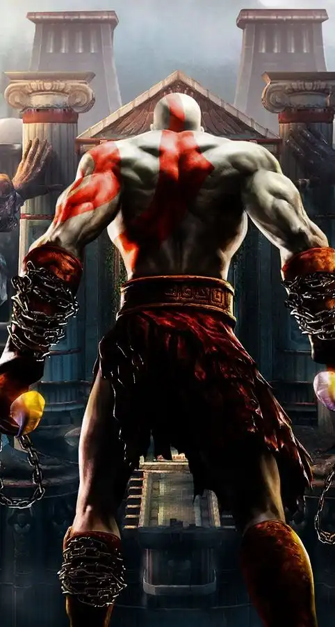
Kratos continúa su guerra contra los dioses del Olimpo después de traicionar a Ares y convertirse en el nuevo Dios de la Guerra. Ahora Zeus y los demás dioses vuelven a verlo como una amenaza, y su destino lo arrastra a una lucha todavía más violenta, épica y personal.
God of War II amplía todo lo que hizo grande al primer juego: combates más intensos, jefes enormes, puzzles más complejos, exploración más variada y escenas que todavía se recuerdan por lo espectaculares que son. Es de esos juegos que convierten cada zona en una pelea por sobrevivir.
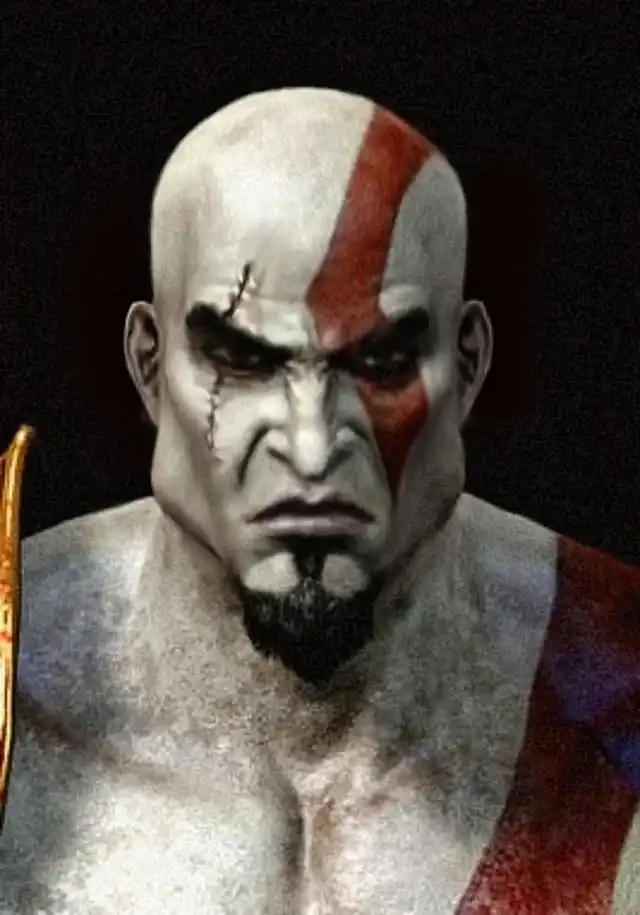
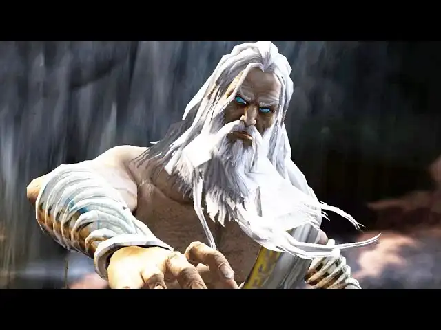
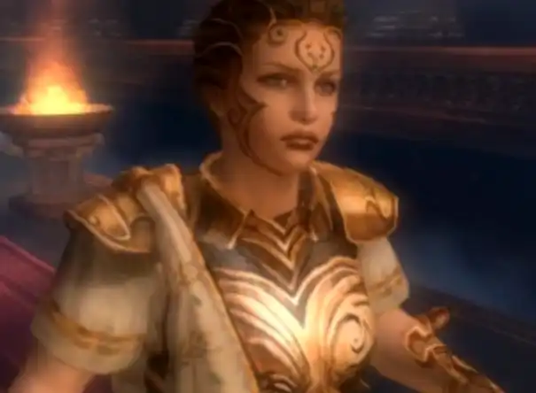
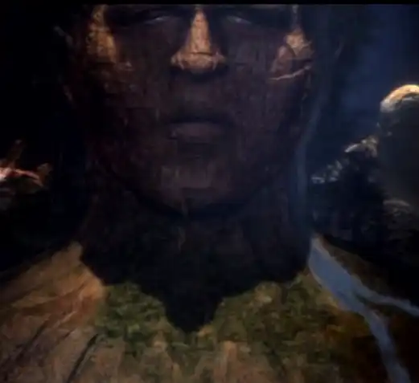
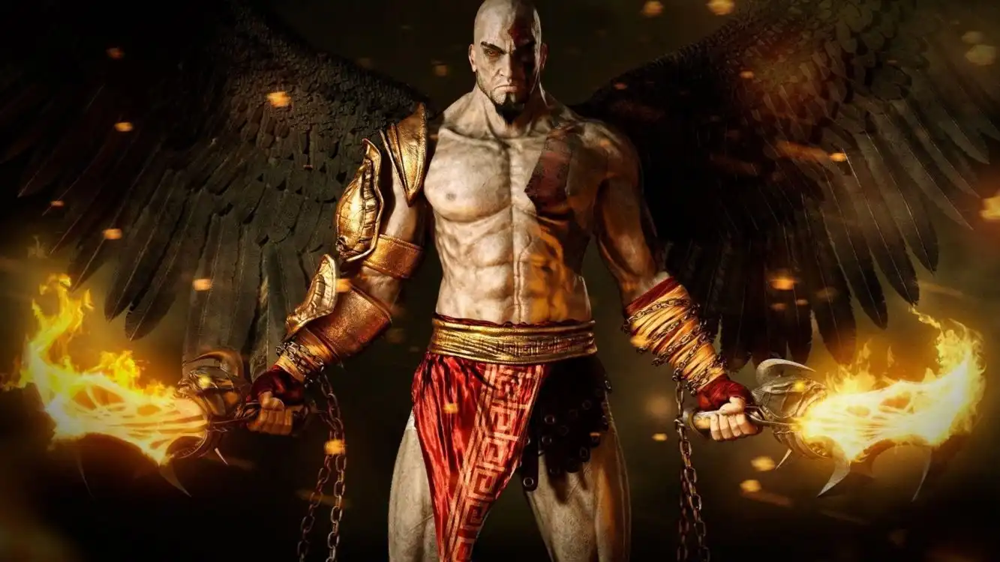
Kratos ya ocupa el trono como Dios de la Guerra, pero su poder no lo protege de la traición. Zeus, temiendo la fuerza del espartano, lo engaña y lo deja al borde de la muerte.
Rescatado por Gaia, Kratos comienza un viaje para recuperar su poder y cambiar su destino. Su búsqueda lo lleva a enfrentarse a criaturas mitológicas, dioses, titanes y toda clase de pruebas imposibles.
A lo largo de la aventura descubre secretos sobre el pasado de los dioses y sobre sí mismo, mientras el juego va construyendo una escalada de violencia y drama cada vez mayor.
God of War II sigue siendo recordado por su escala épica, por lo salvaje de sus jefes y por la forma en que convierte a Kratos en una auténtica fuerza de destrucción.
El combate mantiene la fórmula clásica de la saga con espadas, magia, plataformas y puzzles, pero en esta entrega todo se siente más grande y más agresivo.
Las peleas contra jefes son uno de sus puntos más fuertes, con cámaras espectaculares y secuencias que todavía impresionan hoy.
El Dios de la Guerra, más furioso y vengativo que nunca.
Rey del Olimpo y principal enemigo detrás de la traición.
Figura clave que acompaña el conflicto de Kratos con los dioses.
La titán que ayuda a Kratos a retomar su camino.
El gran antagonista que mueve la traición y domina el Olimpo.
Uno de los grupos más importantes del juego, ligados al control del destino.
Uno de los primeros grandes enfrentamientos, enorme y muy recordado.
Más que un escenario, funciona como una fuerza hostil contra Kratos en toda la aventura.
God of War II tiene una OST grandiosa, muy marcada por coros épicos, percusión pesada y melodías que elevan cada pelea importante.
La música acompaña perfecto el tono mitológico y violento del juego, haciendo que cada momento se sienta enorme.
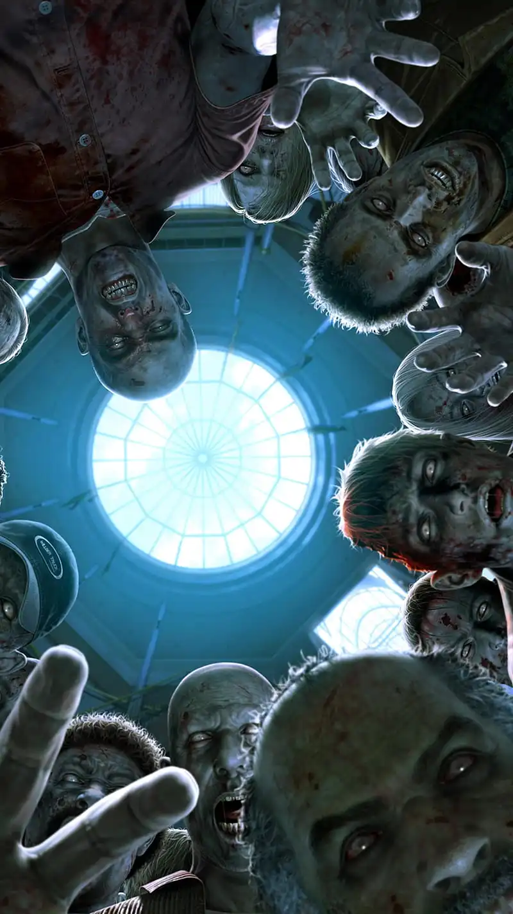
Chuck Greene participa en un reality show extremo llamado Terror Is Reality, pero la noche se convierte en un desastre total cuando un brote de zombis invade Fortune City. A partir de ese momento, su prioridad cambia por completo: debe sobrevivir, proteger a su hija Katey y conseguir Zombrex para evitar que se transforme.
Dead Rising 2 mezcla acción, exploración y caos en un enorme centro comercial y sus alrededores. El juego destaca por permitir fabricar armas absurdas y brutales, enfrentarse a hordas enormes de zombis y encontrar sobrevivientes en medio del desastre. Cada reloj y cada misión hacen que el tiempo se sienta valioso, lo que vuelve la aventura más tensa y adictiva.
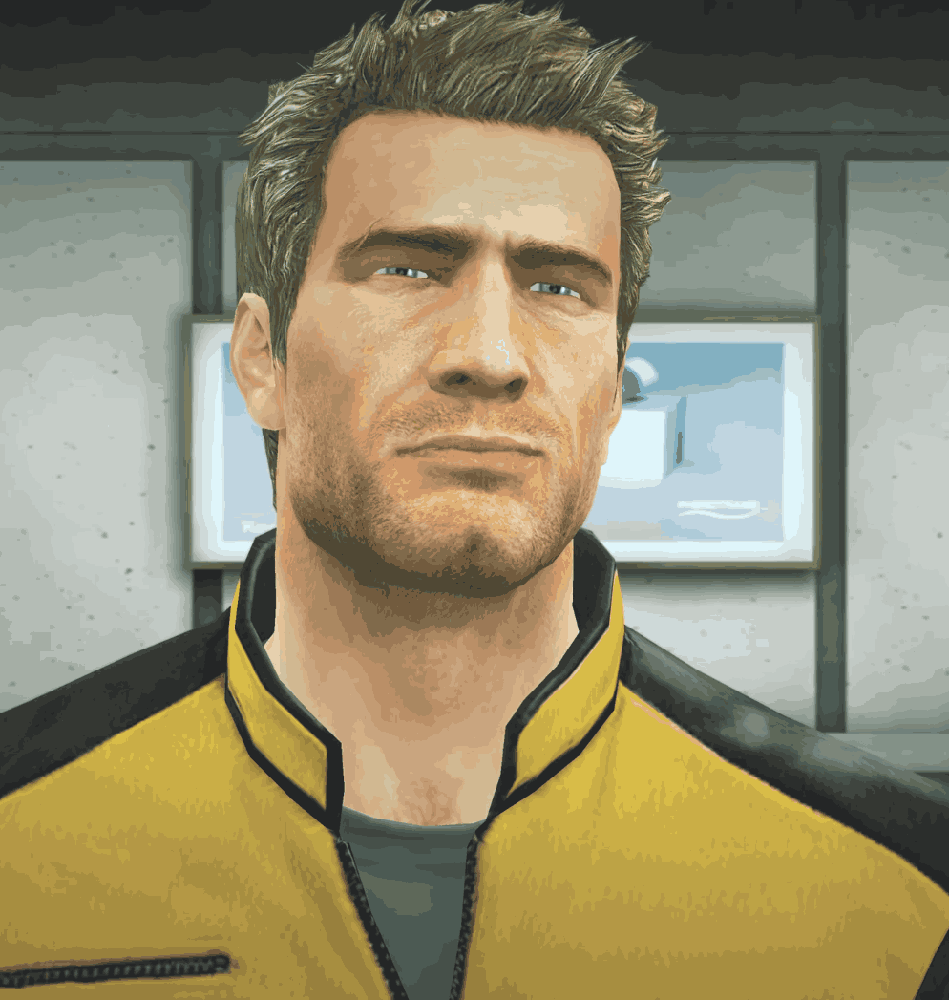
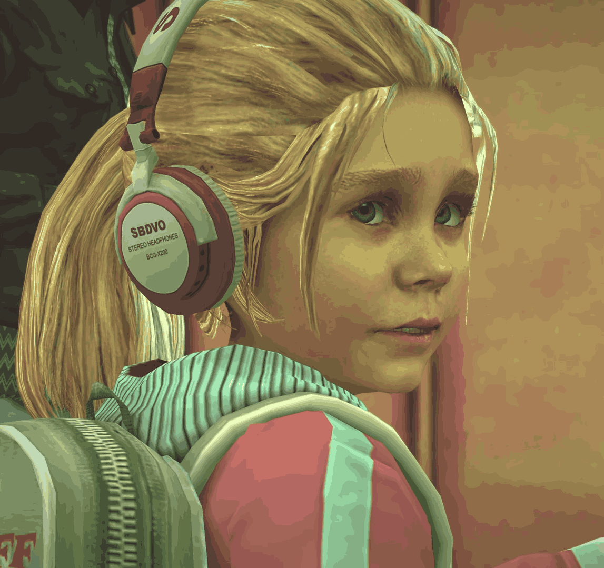
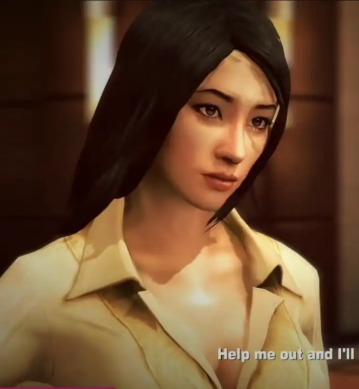
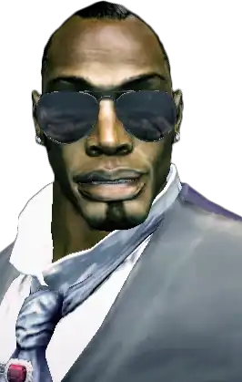
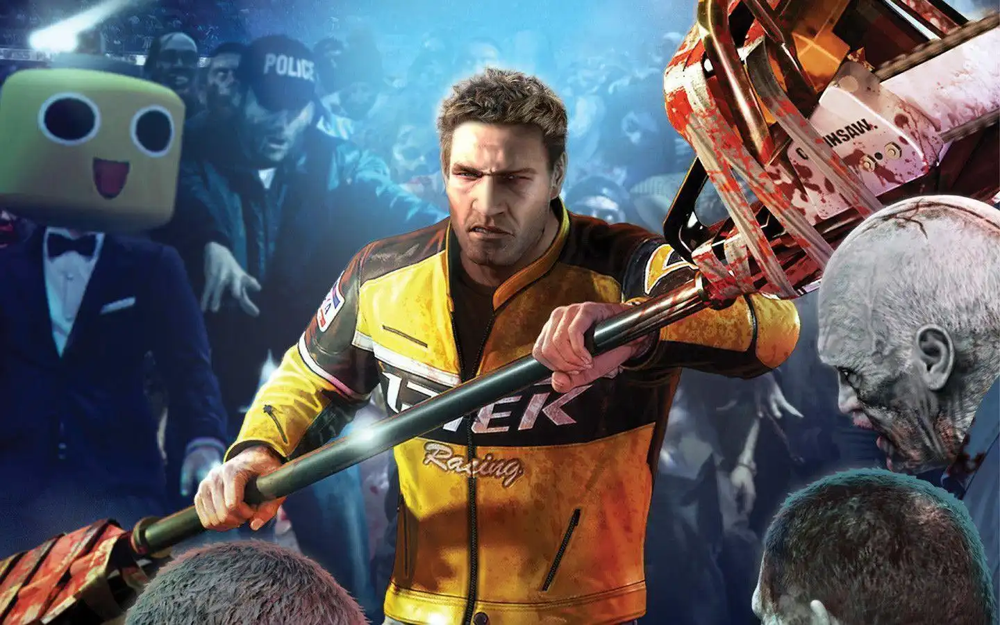
Chuck Greene es un ex campeón de motocross que vive en Fortune City junto a su hija Katey. Su vida depende de conseguir Zombrex con regularidad, ya que su hija fue infectada por mordedura de zombi durante el desastre de Las Vegas.
Todo se complica cuando un brote masivo estalla en la ciudad y Chuck queda atrapado en medio de una pesadilla. Entre el caos del terrorismo mediático, los rescates, los psicópatas y la lucha por sobrevivir, deberá encontrar la forma de proteger a Katey y descubrir quién está detrás del desastre.
A lo largo de la historia, Fortune City se convierte en un campo de batalla lleno de zombis, sobrevivientes desesperados y personajes peligrosos que buscan aprovecharse del caos.
Dead Rising 2 mezcla humor negro, tensión, acción extrema y una carrera contra el tiempo que hace que cada decisión importe.
El juego mantiene la fórmula de recorrer escenarios enormes, rescatar sobrevivientes, completar misiones secundarias y fabricar armas combinadas. Todo esto mientras administras el tiempo, la salud y el Zombrex.
Una de sus mayores virtudes es la creatividad: puedes crear armas ridículas y brutales, como una motosierra unida a una pala o guantes electrificados para destrozar zombis de forma espectacular.
Protagonista principal, ex motociclista y padre que lucha por salvar a su hija.
La hija de Chuck, infectada y dependiente de Zombrex para sobrevivir.
Reportera que investiga lo que ocurre en Fortune City. Ayuda a revelar información importante sobre el brote y la conspiración detrás del desastre.
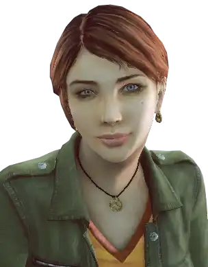
Figura importante en la resistencia y en el desarrollo de la historia.
Presentador y figura mediática que se convierte en una de las amenazas más recordadas del juego.
Figura clave detrás del conflicto en Fortune City y una de las piezas más importantes de la conspiración.
Personajes rotos por el caos que funcionan como jefes impredecibles y muy creativos.
Más que un escenario, la ciudad misma se vuelve una amenaza por el tiempo limitado y el peligro constante.
Dead Rising 2 tiene una OST muy energética que acompaña perfecto el caos de Fortune City. La música refuerza la sensación de urgencia y la locura constante del brote.
El estilo mezcla acción, tensión y un tono un poco irónico que encaja con la personalidad del juego.
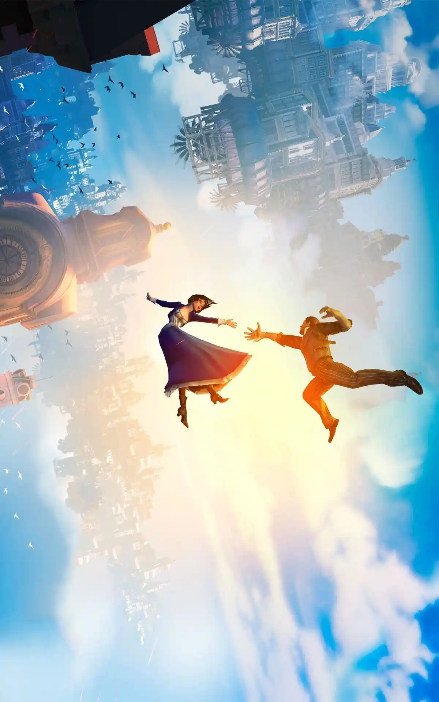
Booker DeWitt es enviado a Columbia, una ciudad flotante construida sobre una fe extrema, el control político y una sociedad profundamente rota. Su misión parece simple: rescatar a una joven llamada Elizabeth y borrar una deuda imposible de pagar.
Pero lo que encuentra en Columbia es mucho más grande que un rescate. Entre fanáticos religiosos, conflictos raciales, realidades alternativas y una tecnología imposible, Booker termina atrapado en una historia que cambia por completo la forma en que se entiende el universo del juego.
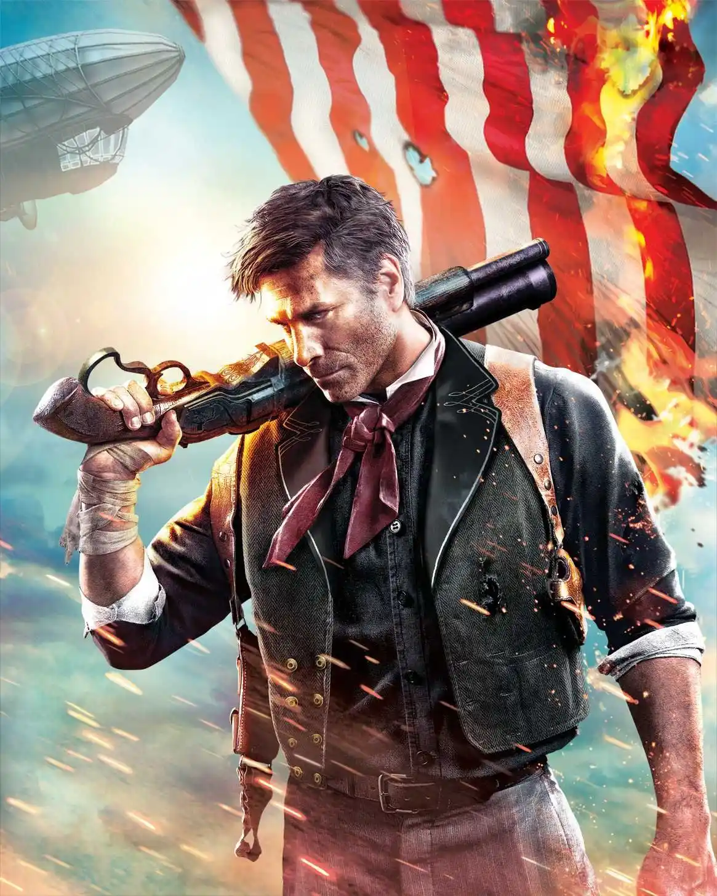
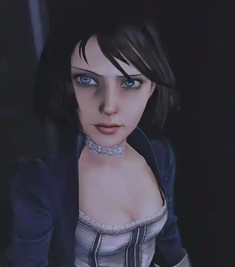
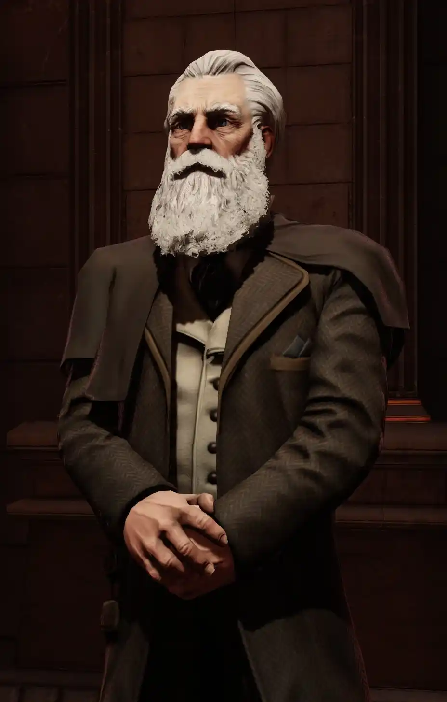
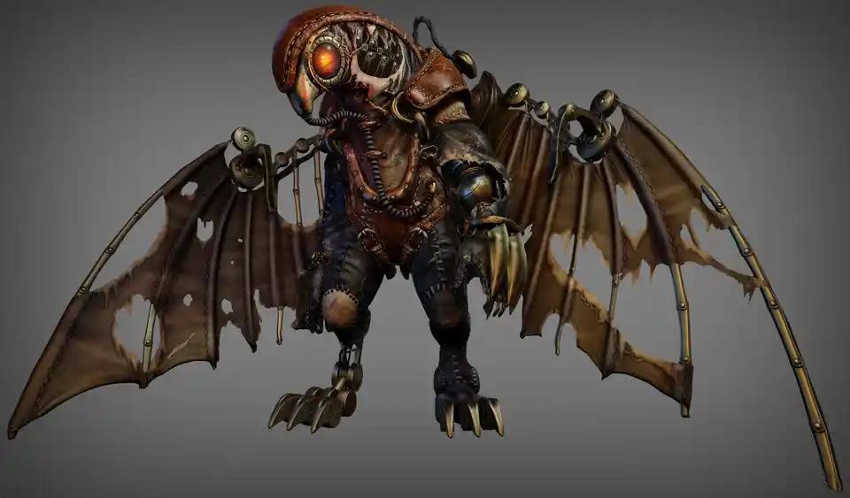
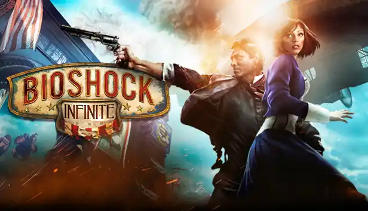
BioShock Infinite sigue a Booker DeWitt, un ex detective y veterano marcado por su pasado, que viaja a Columbia para rescatar a una joven llamada Elizabeth. A cambio, deberá saldar una deuda que lo persigue desde hace años.
Columbia es una ciudad flotante construida como símbolo del sueño americano, pero detrás de su belleza se esconde una sociedad autoritaria, fanática y profundamente violenta. La religión, la política y el control social dominan cada rincón del lugar.
Elizabeth no es una simple prisionera. Posee habilidades únicas que cambian la forma en que Booker entiende el mundo, y su relación con ella termina siendo el centro emocional y narrativo de toda la aventura.
A medida que la historia avanza, aparecen conceptos como realidades alternativas, bucles, decisiones pasadas y consecuencias imposibles de escapar. Lo que al principio parece una misión de rescate termina convirtiéndose en una de las historias más recordadas del gaming.
El juego mezcla acción en primera persona con una narrativa muy ambiciosa, construyendo giros que todavía hoy siguen siendo comentados por los jugadores.
BioShock Infinite combina disparos rápidos, poderes especiales llamados Vigors y combates verticales sobre los famosos rieles de Columbia. El movimiento es ágil y permite pelear a gran velocidad en escenarios muy abiertos.
Elizabeth no combate directamente, pero su ayuda en batalla es clave: puede lanzar objetos, munición, botiquines y abrir posibilidades tácticas durante los enfrentamientos.
El diseño del combate hace que el jugador cambie constantemente de posición y use el entorno a su favor, lo que mantiene cada pelea dinámica y muy intensa.
Protagonista principal, un hombre marcado por su pasado y por una deuda imposible.
Joven misteriosa con un papel central en la historia y poderes que cambian todo.
Líder de Columbia y figura religiosa que controla la ciudad con fanatismo y poder.
La enorme criatura protectora de Elizabeth y una de las amenazas más imponentes del juego.
El gran antagonista, líder de Columbia y símbolo del control ideológico del lugar.
Una criatura gigantesca diseñada para vigilar y proteger a Elizabeth a cualquier precio.
La facción que domina Columbia y sostiene la violencia, el racismo y el fanatismo del sistema.
El propio entorno se vuelve una amenaza constante por su arquitectura, sus conflictos y su control absoluto.
La banda sonora de BioShock Infinite acompaña perfectamente el tono de la ciudad flotante. Mezcla piezas orquestales, temas inquietantes y momentos más emocionales que refuerzan la relación entre Booker y Elizabeth.
El uso del sonido ambiental y de la música ayuda a crear una atmósfera única, elegante y perturbadora al mismo tiempo.
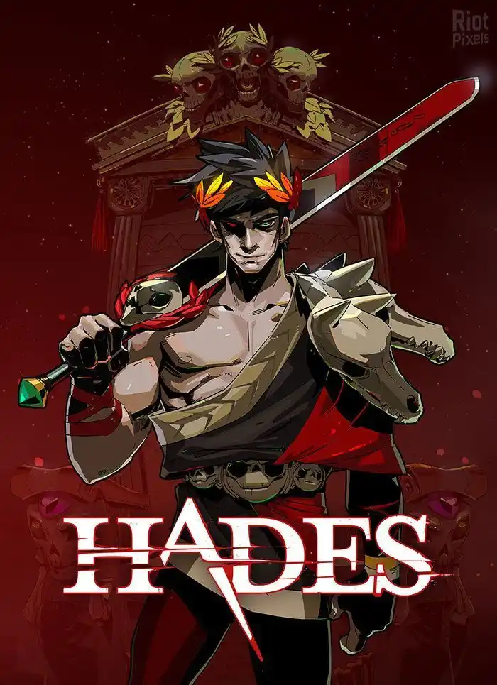
Hades sigue la historia de Zagreus, el hijo del dios del inframundo, que intenta escapar del reino de Hades para descubrir la verdad sobre su familia y alcanzar el Monte Olimpo.
El juego combina combate frenético, progresión constante y narrativa dinámica en una experiencia roguelike extremadamente adictiva. Cada intento de escape cambia gracias a mejoras, bendiciones divinas y diálogos únicos con los personajes de la mitología griega.
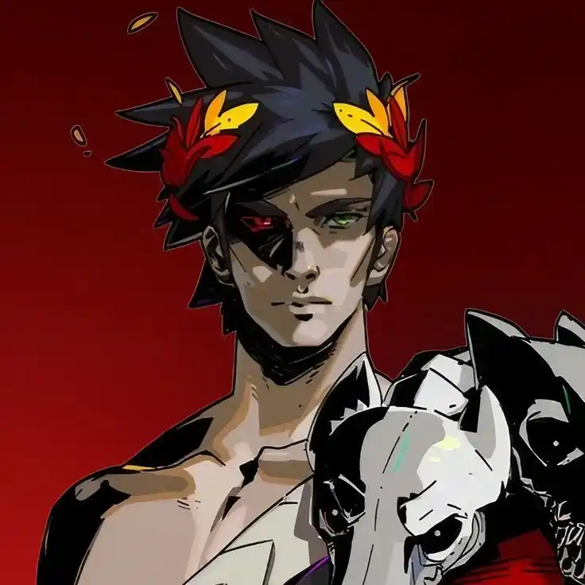
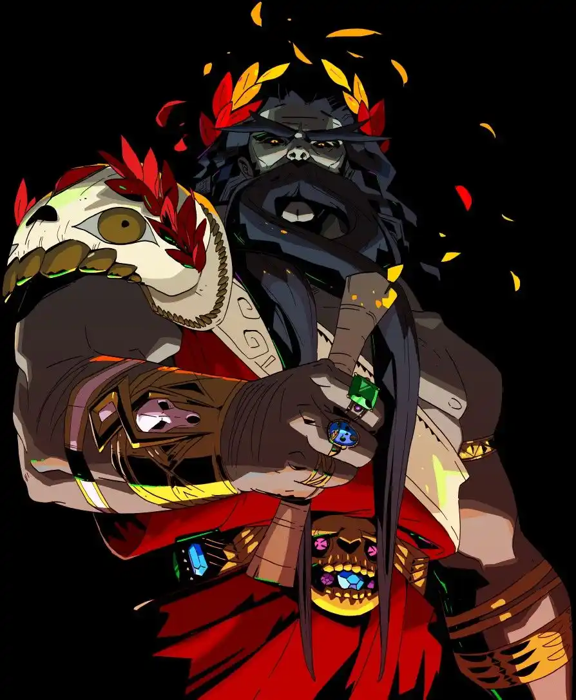
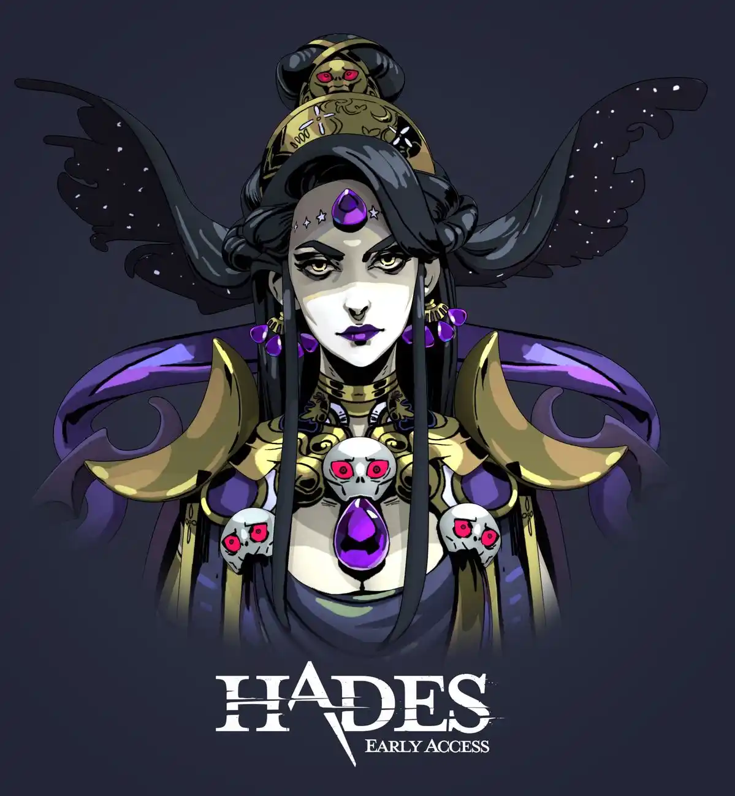
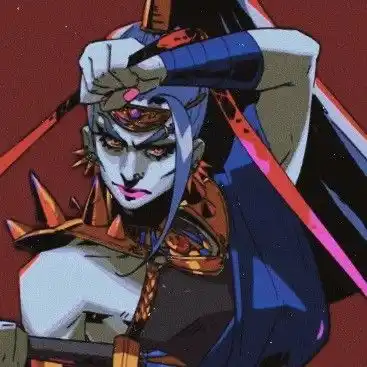
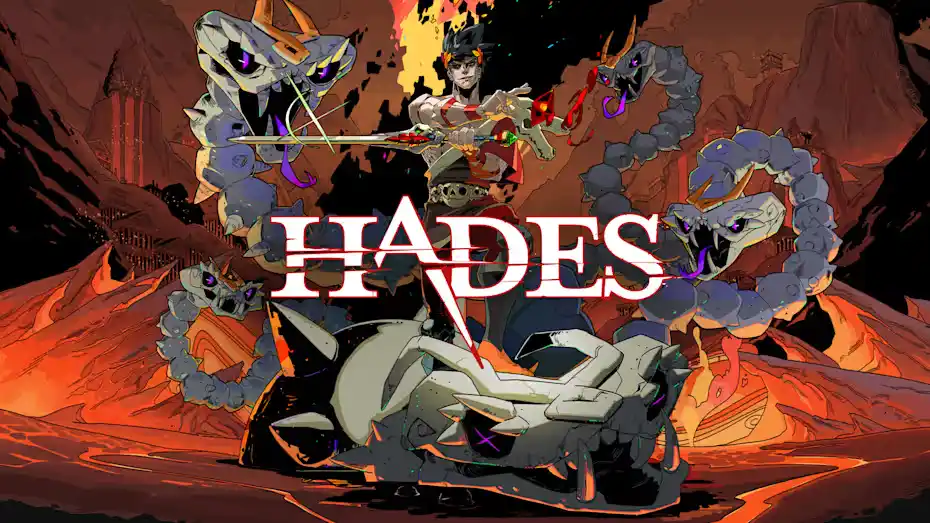
Zagreus vive atrapado en el inframundo bajo el control de Hades, su padre. Cansado de la vida dentro del reino de los muertos, decide escapar para descubrir la verdad sobre su origen y encontrar a Perséfone.
Cada intento de escape lo enfrenta a criaturas mitológicas, guerreros legendarios y dioses que observan su travesía desde el Olimpo. Aunque fracase una y otra vez, Zagreus se vuelve más fuerte y obtiene nuevas habilidades.
La narrativa cambia constantemente según las decisiones, relaciones y progresos del jugador, haciendo que incluso las derrotas formen parte importante de la experiencia.
Hades mezcla acción rápida con elementos roguelike. Cada partida genera habitaciones, enemigos y mejoras diferentes, lo que mantiene el gameplay fresco y dinámico.
El combate es extremadamente fluido y permite usar distintas armas, habilidades especiales y bendiciones otorgadas por dioses olímpicos como Zeus, Ares, Atenea o Poseidón.
Protagonista principal que intenta escapar del inframundo y descubrir la verdad sobre su familia.
Dios del inframundo y padre de Zagreus. Intenta impedir su escape constantemente.
Diosa primordial de la noche que ayuda y protege a Zagreus durante su aventura.
Una de las Furias encargadas de detener a Zagreus cada vez que intenta escapar.
Guardianas del Tártaro que ponen a prueba las habilidades del jugador al inicio de cada intento.
Uno de los combates más icónicos del juego, mezclando velocidad, presión y ataques constantes.
El jefe final y mayor obstáculo del juego, capaz de usar ataques devastadores y gran movilidad.
Cada región introduce nuevas trampas, enemigos y desafíos que vuelven la escapatoria más peligrosa.
La música de Hades combina rock intenso con sonidos inspirados en la mitología griega. La OST acompaña perfectamente el ritmo frenético del combate y la atmósfera oscura del inframundo.
Darren Korb creó una de las bandas sonoras más reconocidas de los roguelikes modernos, con temas memorables tanto para las peleas como para los momentos emocionales.